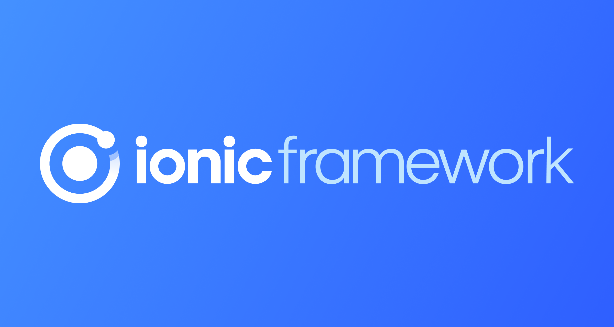

Front-end Development: The Key to Attractive User-Friendly Websites

While you are crossing the streets of any place and gazing around the city, what attracts your eyes? Any idea? It is the livelihood and front elevating designs of the shops, restaurants, malls or anything which can grab the attention just by looks. That is how it works on the pages, websites on the internet.
When researching any topic on the internet, one should look for websites that are user-friendly, aesthetically pleasing, and easy to navigate. What lies behind the attractive webpages and interactive features we access through web browsers is known as Front-end Development. This involves creating user interfaces that users can interact with and view on a web application.
One of the greatest obstacles faced by front-end developers is staying up-to-date on the tools and processes for creating the user-facing side of websites, which require continuous monitoring of the industry's developments.
If you're confused about what front-end technology to choose, don't worry! We've compiled a list of the top 10 technologies you should be aware of in 2023. To make the best selection, take some time to consider the features of each technology and to brainstorm your options.
Before diving into the details of front-end technologies, it is important to understand what front-end development is.
What is Front-End Development?
Have you ever wondered how websites are created? The clicks of buttons, slides of images, carousels, loading symbols, and navigations are all examples of front-end development, which is what the user can actually see on the pages. This type of development allows users to become engaged with the website and all the features it offers. To give the website an attractive look, action and design are created through the three main front-end technologies: HTML (Hypertext Markup Language), CSS (Cascading Style Sheet), and JS (JavaScript).

Front-End Technologies
Front-end technologies are essential for businesses that want to improve user experience, efficiency, and the aesthetic of their website. They are key tools for enhancing the way users interact with the website.
With so many front-end technologies on the market, it can be hard for web coders and designers to stay up-to-date. Fortunately, these technologies make the development process faster, easier, and more efficient, so developers can increase their productivity and do their work more quickly. New tools are introduced every year, making older ones outdated, but this can be used to the developers' advantage, as it allows them to stay on top of the latest trends.
Benefits of Front-End Technologies
- Reusable components and templates
- Streamline tasks with automation
- Optimize and debug your code
- Boosts developers’ productivity
- Streamline the development process for developers
- Comes in handy when you’re on a tight deadline
- Assist in the development of responsive designs, etc.
Top Front-End Technologies
Looking ahead to 2023, it's clear that certain front-end technologies for both web and mobile applications will be shining brightly. Below, we'll outline the top 10 front-end technologies expected to dominate the market in the coming years.
- React.js
- Virtual DOM: React JS uses a virtual representation of the real DOM, which allows it to update only the parts of the UI that have changed, instead of re-rendering the whole UI. This improves the performance and efficiency of the web application.
- JSX: JSX is a syntax extension that allows us to write HTML-like code in JavaScript. It makes the code more readable and easier to write. JSX is not mandatory, but it is recommended to use it with React JS. JSX is compiled into JavaScript by a tool called Babel.
- React Native: React Native is a framework that allows us to use React JS to create native mobile applications for Android and iOS platforms. It uses the same components and concepts as React JS, but renders them using native UI elements. React Native enables us to write cross-platform mobile applications with a native look and feel.
- One-way data binding: React JS follows a one-way data flow, which means that the data is passed from the parent components to the child components as properties (props). The child components cannot modify the props, but they can communicate with the parent components through callback functions. This makes the data flow more predictable and easier to debug.
- Components: React JS is based on a component-based architecture, which means that the UI is divided into reusable pieces of code called components. Each component has its own state, logic, and presentation. Components can be nested inside other components to create complex UIs. Components make the code more modular and maintainable.
- Simplicity: React JS is simple to learn and use, especially if you are familiar with HTML and JavaScript. It has a minimalistic and intuitive syntax, and a clear and concise documentation. It also has a large and active community that provides support and resources.
- Performance: React JS is known for its high performance and fast rendering. It uses various techniques and optimizations, such as virtual DOM, diffing algorithm, batching updates, and hooks, to ensure that the web application runs smoothly and efficiently
- Angular.js
- MVC Architecture: Angular JS follows the Model-View-Controller pattern, which separates the application logic, data, and presentation. This makes the code more organized, modular, and testable.
- Data Binding: Angular JS supports two-way data binding, which means that any changes in the model are automatically reflected in the view, and vice versa. This eliminates the need for manual DOM manipulation and synchronization.
- Directives: Angular JS allows us to create custom HTML attributes and elements, called directives, that can extend the functionality of the HTML. Directives can be used to create reusable components, add behaviors, and manipulate the DOM.
- Dependency Injection: Angular JS supports dependency injection, which is a technique that allows us to inject objects or services into other objects or services, without creating them explicitly. This makes the code more flexible, maintainable, and testable.
- Routing: Angular JS provides a built-in routing service, called ngRoute, that enables us to create single-page applications with multiple views and controllers. Routing allows us to switch between different views based on the URL, without reloading the page.
- Services: Angular JS provides various built-in services, such as $http, $location, $timeout, $interval, etc., that can be used to perform common tasks and communicate with the backend. We can also create our own custom services and inject them into other components using dependency injection.
- Filters: Angular JS provides various built-in filters, such as uppercase, lowercase, date, currency, etc., that can be used to format and transform the data in the view. We can also create our own custom filters and use them with the pipe (|) operator.
- Vue.js
- Reactivity: Vue.js utilizes reactive data-binding, automatically updating the UI when data changes.
- Component-Based: Vue.js architecture is centered around reusable and modular components, encapsulating HTML, CSS, and JavaScript logic.
- Virtual DOM: Vue.js employs a virtual DOM to efficiently update the real DOM by batching changes.
- Directives: Vue.js provides built-in directives (e.g., v-if, v-for) for adding dynamic behavior to DOM elements.
- Templates: Vue.js uses HTML-based templates that bind to the Vue instance's data.
- Computed Properties and Watchers: Vue.js offers computed properties for caching derived data and watchers for asynchronous operations upon data changes.
- Routing: Vue Router facilitates building SPAs (Single Page Applications) with multiple views and navigation.
- Vuex: Vuex is Vue.js's state management pattern, providing a centralized store for managing application state.
- Lifecycle Hooks: Vue.js provides hooks (e.g., created, mounted) allowing execution of code at specific component lifecycle stages.
- CLI Tool: Vue CLI simplifies application setup, structuring, and integration of plugins.
- Flutter
- Hot Reload: Flutter's Hot Reload feature allows developers to instantly view changes made to the code, speeding up the development process.
- Widgets: Flutter is built around widgets, which are reusable UI elements that can be customized, combined, and composed to create complex interfaces.
- Single Codebase: With Flutter, developers can use a single codebase to create apps for multiple platforms like iOS, Android, web, and desktop.
- Expressive UI: Flutter offers a rich set of customizable widgets, enabling developers to create highly expressive and visually appealing user interfaces.
- Performance: Flutter apps deliver high performance due to its use of Dart language and its own rendering engine, reducing the need for a bridge to native components.
- Native Performance: Flutter provides access to platform-specific features and delivers near-native performance by compiling to native ARM code.
- Material Design and Cupertino: Flutter supports both Material Design (Android) and Cupertino (iOS) widgets, maintaining native look and feel on respective platforms.
- Access to Native Features: Flutter allows integration with native code through platform channels, enabling access to device-specific functionalities.
- Community and Ecosystem: Flutter has a growing community and a vast ecosystem of packages and tools, aiding in app development and maintenance.
- Open Source: Flutter is an open-source framework maintained by Google, encouraging contributions, transparency, and innovation.
- Bootstrap
- Responsive Grid System: Bootstrap offers a responsive, mobile-first fluid grid system that scales components and content for various device sizes.
- Pre-styled Components: Bootstrap provides a vast array of pre-styled components like buttons, forms, navigation bars, and more, allowing quick and consistent design implementation.
- Utility Classes: It includes utility classes that can be applied directly to HTML elements to modify their appearance and behavior, enhancing flexibility and speed in styling.
- Customizable Styles: Bootstrap allows customization through variables and SASS mixins, enabling developers to adapt the framework's styles to fit project requirements.
- JavaScript Plugins: Bootstrap comes bundled with a set of JavaScript plugins (e.g., modal, carousel) that enhance interactivity and functionality without extra coding effort.
- Browser Compatibility: Bootstrap ensures compatibility with major browsers, minimizing cross-browser compatibility issues.
- Community and Documentation: It has a large and active community contributing resources, plugins, and themes. Bootstrap also provides comprehensive documentation and examples for easy adoption.
- Flexbox Support: Bootstrap 5 introduced improved support for Flexbox, allowing more flexible and efficient layout options.
- Accessibility Features: Bootstrap includes built-in accessibility features, adhering to best practices and making it easier to create accessible web applications.
- Modularity and Scalability: Bootstrap's modular structure and scalable grid system facilitate the creation of complex layouts and scalable designs.
- Ionic
- Cross-Platform Development: Ionic allows developers to build cross-platform mobile applications using a single codebase, supporting iOS, Android, and web platforms.
- UI Components: It provides a library of pre-designed and customizable UI components, including buttons, forms, navigation, and more, ensuring consistent design across platforms.
- Native Functionality: Ionic offers access to native device features and functionalities through Cordova or Capacitor plugins, enabling integration with device hardware and native APIs.
- Performance: Ionic emphasizes performance optimization, utilizing technologies like Ahead-of-Time (AOT) compilation and lazy loading for faster app performance.
- Theme Customization: It allows easy theming and customization of app styles using CSS variables, enabling quick adjustments to the app's appearance.
- Platform Adaptation: Ionic adjusts the app's UI/UX to match platform-specific design guidelines (Material Design for Android, Cupertino for iOS) for a native look and feel.
- Community and Plugins: It boasts a vibrant community contributing plugins, themes, and resources, enhancing the development experience and expanding functionality.
- Live Reload: Ionic's Live Reload feature allows developers to see changes instantly during development, speeding up the iteration process.
- CLI Tooling: Ionic CLI provides a comprehensive set of command-line tools for project creation, building, testing, and deployment, streamlining the development workflow.
- Documentation and Support: Ionic offers extensive documentation, guides, and support resources, assisting developers in learning and troubleshooting.
- HTML5 Boilerplate
- HTML5 Markup: HTML5 Boilerplate provides a robust and optimized HTML5 template structure, leveraging modern HTML elements for better semantics and compatibility.
- Responsive CSS: It includes a responsive CSS grid, styles, and helper classes, facilitating mobile-first and responsive web design.
- Optimized Stylesheets: CSS normalization and default stylesheets improve cross-browser consistency and provide a solid starting point for styling.
- Performance Optimization: HTML5 Boilerplate comes with optimized performance techniques like resource minification, caching strategies, and efficient scripts loading.
- Mobile Optimization: Mobile-friendly meta tags and settings are included for better mobile performance and appearance.
- IE Compatibility: It includes conditional classes and settings to help maintain compatibility and resolve issues in older versions of Internet Explorer.
- JavaScript Setup: It sets up JavaScript files, includes jQuery, and offers best practices for efficient script loading and usage.
- Security and Best Practices: It includes security-focused HTTP headers, `.htaccess` file settings, and best practices to enhance web security.
- Build Tools Integration: HTML5 Boilerplate integrates with build tools like Grunt or Gulp for tasks like minification, concatenation, and optimization.
- Documentation and Community: It provides comprehensive documentation, examples, and a supportive community to aid developers in understanding and using the framework effectively.
- Npm (Node Package Manager)
- Package Management: npm is a powerful package manager for Node.js, providing access to a vast ecosystem of reusable code modules and libraries (packages).
- Dependency Management: It manages project dependencies efficiently by allowing developers to specify and install required dependencies for their Node.js projects using a simple package.json file.
- Version Management: npm enables versioning of packages, allowing developers to specify the required version ranges or lock down to specific versions for consistency and stability.
- Command-Line Interface (CLI): npm offers a comprehensive CLI tool for developers to perform various tasks such as installing packages, updating dependencies, publishing packages, and more.
- Scalability: npm supports scalable workflows by providing tools for managing large-scale applications with numerous dependencies efficiently.
- Scripts and Automation: It allows developers to define and execute custom scripts in the package.json file, streamlining common tasks and facilitating automation in the development process.
- Version Control Integration: npm seamlessly integrates with version control systems like Git, enabling easy collaboration and sharing of projects across teams.
- Security: npm incorporates security features such as vulnerability scanning and advisory information to help developers identify and mitigate potential security risks in packages.
- Private Packages and Registries: npm provides support for creating and managing private packages and registries, allowing organizations to host and share proprietary code securely.
- Community and Ecosystem: It has a vibrant community of developers contributing packages, tools, and documentation, fostering innovation and growth in the Node.js ecosystem.
- Meteor
- Full Stack Development: Meteor is a full-stack JavaScript framework, enabling developers to build end-to-end web applications using JavaScript for both client and server-side development.
- Data Synchronization: Meteor's real-time data synchronization features provide automatic and seamless data updates across connected clients in real-time without manual intervention.
- Isomorphic Code: It allows for writing isomorphic code, where the same codebase can be utilized for both server-side and client-side logic, reducing redundancy and enhancing code maintainability.
- Live Reload: Meteor offers live reloading functionality, allowing developers to instantly view changes in the application during development without needing to refresh the browser.
- Integrated Development Environment (IDE): It comes with a built-in development environment (Meteor DevTools) that streamlines the development process, aiding in debugging and optimizing the application.
- Package System: Meteor's package system allows easy integration of packages and libraries, extending the framework's functionality and enhancing development efficiency.
- Meteor Galaxy Hosting: Meteor offers its hosting service, Meteor Galaxy, specifically optimized for Meteor applications, providing scalability and ease of deployment.
- Community and Packages: It has a supportive community contributing various packages, resources, and tutorials, accelerating development and solving common challenges.
- Cross-Platform Compatibility: Meteor supports multiple platforms, enabling developers to build applications for web, iOS, Android, and desktop using a unified codebase.
- Security: Meteor emphasizes security features like data validation and secure methods, helping developers build secure applications by default.
- Grunt
- Task Automation: Grunt is a powerful task runner that automates repetitive tasks in the development workflow, such as minification, compilation, testing, and more.
- Configuration over Convention: It follows a configuration-based approach, allowing developers to define tasks and workflows based on project requirements rather than enforcing strict conventions.
- Plugin Ecosystem: Grunt offers a vast ecosystem of plugins that extend its functionality, providing a wide range of tasks for various purposes, making it highly extensible and adaptable.
- Performance Optimization: It helps optimize project performance by enabling tasks like minification, concatenation, image optimization, and caching strategies for assets.
- Modularity: Grunt's modular design allows developers to compose tasks and workflows using individual plugins, fostering flexibility and reusability.
- CLI and Configuration: Grunt provides a command-line interface (CLI) for running tasks and a configuration file (Gruntfile.js) where developers define and configure tasks for their projects.
- Live Reload and Watch: It supports live reloading and file-watching functionalities, enabling developers to see changes instantly in the browser and trigger tasks when files are modified.
- Consistency and Reproducibility: Grunt helps maintain consistency in development environments by automating tasks, ensuring that builds are reproducible across different setups.
- Community Support: It has an active community contributing plugins, documentation, and resources, providing support and enhancing the ecosystem's richness.
- Integration with Build Tools: Grunt integrates seamlessly with build tools, version control systems, and development environments, enhancing the overall development workflow.
ReactJS, commonly known as React, is a prominent open-source, JavaScript-based front-end library developed and maintained by Facebook. It provides a dynamic and interactive user experience to improve UI/UX design, while only dealing with the view layer. React is utilized in various Facebook products, such as Instagram and WhatsApp, and can be used with frameworks, like Next.js, to create single-page, mobile, or server-side applications. Additionally, code can be broken down into smaller pieces, which makes debugging processes more efficient.
Over 220,000 websites have adopted React as their platform of choice. Some of the most prominent companies utilizing this framework are Apple, PayPal, BBC, Dropbox, Reddit, and Netflix.

Key Features:
Angular.js (also known as Angular or AngularJS) is a JavaScript-based open-source web application framework that is used to create single-page web applications. Angular.js is used to enhance and simplify web application development, while providing developers with a robust tool set. It is based on the Model-View-Controller (MVC) design pattern and is maintained by Google.
Angular.js helps developers create dynamic applications with data binding, templates, and routing. With its two-way data binding, developers only need to write the model and the view part of the software application without the need to worry about synchronizing data between the view and model layers. Additionally, templates give developers the ability to quickly create user-friendly interfaces with minimal coding. Finally, the routing system allows the application to navigate between different views in an organized way.
Key Features:
Evan You created the well-known JavaScript framework 'Vue.js' to develop interactive User Interfaces (UIs) and Single-page Applications (SPAs). Its usage for the production of lightweight and flexible interactive UI components is renowned among JavaScript frameworks. Vue.js offers an effective way to implement the MVVM (Model View-View Model) model architecture pattern due to its lightweight nature.
For front-end development, Vue.js is ideal because it requires HTML and CSS knowledge and its core library is solely dedicated to the view layer. It can be easily incorporated into bigger projects without any issues or complications. Vue.js is used to make some of the most popular websites and applications such as 9GAG, GitLab, Nintendo, Behance, and Laravel.
Key Features:
Flutter, developed by Google, is an open-source cross-platform UI framework that enables the use of a single codebase to develop flexible, native-like apps. As one of the fastest-growing frontend frameworks, it provides effective and flexible web designs, as well as allowing native capabilities and expressive elements on both iOS and Android platforms. This is why it has become so popular.
Using the Dart programming language and the Skia graphical engine, Flutter allows developers to rapidly build applications for both Android and iOS. Already, a number of big companies like Google, Alibaba Group, Dream11, BMW, and eBay have taken advantage of the Flutter platform to build their app or website. With the Flutter framework, developers can quickly create high-performance cross-platform experiences.
Key Features:
Bootstrap is an impressive, free, and open-source front-end framework that has the ability to create responsive websites and applications that are optimized for mobile devices. It offers an extensive library of HTML, CSS, and JavaScript templates, making it possible to design website elements, such as typography, navigation, buttons, and forms, quickly and effectively. Thanks to its pre-built components, users can conveniently modify their designs with themes and icons.
Originally designed by Twitter, Bootstrap is now the most popular front-end framework out there. It's incredibly user-friendly, too - all you really need to know is HTML, CSS, and JavaScript to get started. It's trusted by some of the biggest names in tech, like LinkedIn, Postman, Spotify, Twitter, Udemy, StackShare, Lyft, and more.

Key Features:
Ionic is a powerful open-source front-end framework, enabling the development of both desktop and mobile applications (for iOS, Windows, and Android) with one joint codebase. Ionic is suitable for creating hybrid mobile apps using web-based technologies such as HTML, CSS, and Javascript, accompanied by integrations with well-known frameworks including React, Angular, and Vue. This efficient platform provides a command-line interface, allowing app development with no requirement of coding knowledge.
Ionic offers abundant themes and components that can be tailored to improve the UI of your app and bring in more users. Notable companies like Accenture, JustWatch, Digital Services, Diesel, AppsFlyer, PartsAvatar, etc. have implemented this platform in their applications/websites.
Key Features:
HTML5 Boilerplate is a professional front-end template for web developers. It provides a starting point with which web developers can begin to build up their applications. It's a popular choice because it provides the most popular, recommended and up-to-date HTML5 markup and best practices.
HTML5 Boilerplate incorporates HTML5, CSS3 and JavaScript in a single solution. It empowers developers to quickly create working prototypes and move to production ready solutions. It helps eliminate all the redundancy associated with designing and coding a web application.
With HTML5 Boilerplate, developers are provided with everything they need to create a website. This includes HTML, CSS, basic templates, modernizr, jQuery, normalize, Modernizr and the Google Universal Analytics code. This ensures the application will function across all browsers and devices.
Key Features:
NPM (Node Package Manager), maintained by NPM, Inc., is a package manager completely written in JavaScript and is the default package manager for the JavaScript runtime environment Node.js. This command-line tool allows developers to discover, install, and develop Node programs, as well as discover reusable pieces of code and assemble them according to their preferences. It is known as one of the largest software registries in the world, and can be used to install, update, and uninstall Node.js packages and modules in an application.
Npm is a vital instrument for JavaScript designers who wish to share and reuse others' code, with over 350,000 packages. Numerous major organizations such as Uber, Netflix, LinkedIn, Trello, Twitter, PayPal, eBay, NASA, Yahoo, Walmart, GoDaddy, etc. all make use of this platform for their apps/sites.

Key Features:
Meteor is a free, open-source, full-stack JavaScript framework that is built using Node.js. Since its inception in 2011, it has earned a reputation as an ideal, easy-to-use solution for rapid prototyping and developing cross-platform code (iOS, Web, Android). The array of packages provided, the node.js and MongoDB foundation it relies on, and the code flexibility it offers make Meteor an excellent tool for building robust, secure real-time web applications as well as handling everything from the browser applications to a database or server.
It is claimed that Meteor can be used for both the front-end and back-end development of mobile, web and desktop applications. Yet, building the entire application using only Meteor for multiple platforms might not be the most rational move. A few of the giants that use this platform for their applications/websites include Honeywell, Mixmax, IKEA, Dispatch, Lubert, Fantasy Biathlong, Wishlist, Hagglemate, etc.

Key Features:
Grunt is a JavaScript task runner that can automate a range of tasks such as compilation, unit testing, minification, and linting. It uses the command-line interface to execute custom tasks that are specified in a Gruntfile. Grunt offers a great variety of bundled plugins to choose from, and it can automate any one of them with minimal effort.
Grunt is known for its highly customizable nature–it enables developers to add, modify and extend custom tasks to meet their individual needs; each task has a set of configuration options the user can adjust. Using this technology, developers can consolidate their workflows and increase project performance. A few of the giants that use this platform for their applications/websites include Bitovi, Adobe, Bootstrap, Twitter, jQuery, Opera, LiveChat, Walmart, Microsoft, Cloudant, etc.

Key Features:
Conclusion
Recent statistics from the US Bureau of Labor Statistics show that web development positions are set to grow 15% from 2016 to 2026. Generally, Indian Front-end Developers can make anything from 1.8 to 13.2 Lakhs with an average salary of 4.5 Lakhs. The following are some of the key roles of a front-end developer:
- Front End Software Engineer
- Front End Developer
- Front End Engineer
- Junior Front End Developer
- Senior Front End Developer
- Front End Web Designer, etc.
When selecting front-end technologies, various aspects need to be taken into account, including but not limited to: personal preferences, project deadlines, market timing, server-side rendering, mobile development, budgets, volumes, flexibility, productivity, futuristic support, and execution. This decision-making process can often be overwhelming, especially when new tools or updates are introduced regularly. Therefore, paying close attention to promoting successful development is essential.
When it comes to 2023, the front-end technologies discussed in this article will be essential for a successful project. However, it is important to note that no single framework is perfect. Each one has its own pros and cons, so it is vital to make an informed decision based on individual needs. This article is here to ensure that the reader does not become overwhelmed by the broad array of front-end development options.